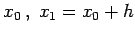
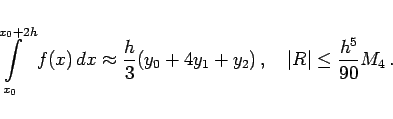

Inhalt Index DeskTop Bronstein

 Numerische Mathematik Numerische Integration Interpolationsquadraturen
Numerische Mathematik Numerische Integration Interpolationsquadraturen


Im Intervall [x0,x0+2h] wird f(x) durch ein Polynom 2. Grades ersetzt, das f(x) an den Stützstellen  und x2 = x0+2h interpoliert:
|  | (19.79) |
Für die zusammengesetzte SIMPSON-Formel muß n gerade sein. Man erhält:
Die zusammengesetzte SIMPSON-Formel hat die Fehlerordnung 4 und ist für Polynome bis zum Grad 3 exakt.